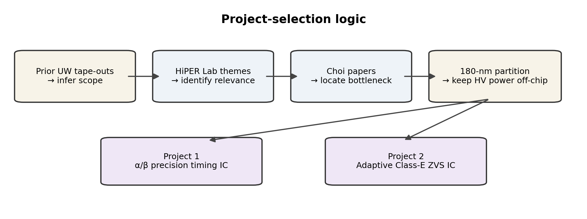
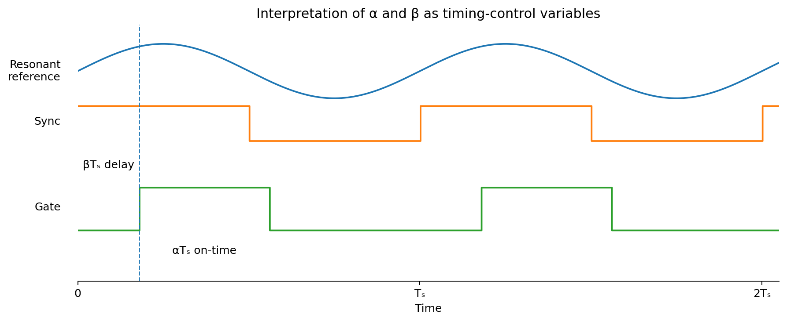
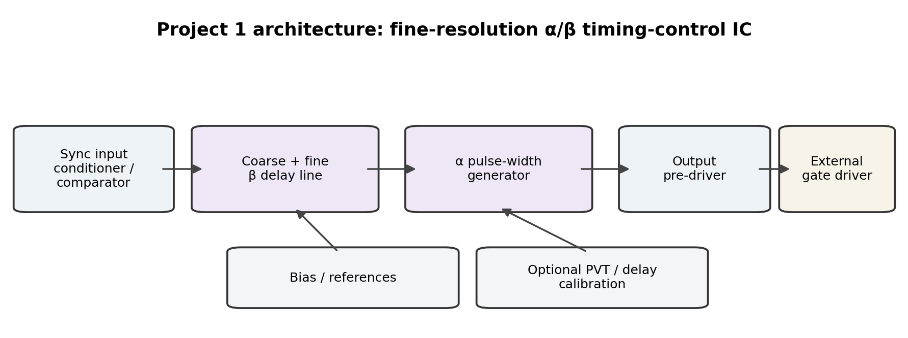
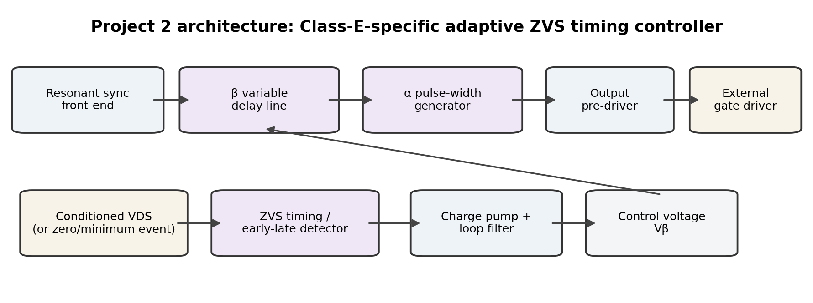

Executive Summary
Objective. Identify a power-electronics-oriented analog IC project that is technically meaningful to the UW High-frequency & Intelligent Power Electronics Research Lab (HiPER Lab), but remains comparable in scope to prior UW analog tape-outs. The proposed chip should not attempt to integrate the high-voltage GaN power stage. Instead, it should integrate the timing, sensing, and control functions whose value increases as the converter switching period shrinks into the tens of nanoseconds.
Recommended structure. Treat Project 1 as the lower-risk tape-out candidate and Project 2 as either an alternative proposal or a stretch architecture built on the same timing core. Project 1 generates programmable duty ratio α and phase delay β with fine time resolution. Project 2 closes a feedback loop around β so that the controller automatically aligns a Class-E switching event with a measured zero-voltage-switching (ZVS) condition.
Core recommendation: propose an integrated fine-resolution Class-E timing controller as the guaranteed tape-out, while presenting adaptive ZVS feedback as the research extension. This preserves a clean post-silicon test path even if a complete high-power Class-E test bench is not available when silicon returns.
| Item | Project 1: α/β Timing IC | Project 2: Adaptive Class-E ZVS IC |
|---|---|---|
| Central idea | Generate precise Class-E gate timing from externally commanded α and β. | Measure switching-timing error and automatically adjust β toward ZVS. |
| Control type | Open-loop timing actuator / mixed-signal waveform generator. | Closed-loop event-driven controller. |
| Meaningful blocks | ~5 core blocks; optional 6th calibration block. | ~6 blocks when front-end, detector, loop and timing core are counted. |
| Primary innovation | Fine, low-jitter, PVT-aware delay generation in 180-nm CMOS. | Converter-state sensing + analog adaptation of the same delay core. |
| Risk | Low–medium. | Medium–high. |
| Best use | Primary tape-out proposal. | Alternative proposal or stretch goal. |
1. How the Project Space Was Chosen
1.1 Start from the educational envelope of prior UW tape-outs
The project-selection process began by looking at what previous tape-out teams actually built, rather than starting from an unconstrained power-electronics wish list. Several recurring patterns appear in the examples supplied:
- One dominant technical idea that can be explained in one sentence.
- Roughly three to six circuit blocks, most of which are standard analog or mixed-signal building blocks.
- One block or operating technique that carries most of the novelty and design exploration.
- Metrics that are visible in schematic/post-layout simulation and can also be measured on returned silicon.
- Large passives, high-voltage power devices, antennas, coils, matching networks, and other impractical structures are moved off-chip.
- A custom PCB provides biasing, interfaces, external passives, and system-level demonstration.
| Precedent project | Representative on-chip blocks | Main “interesting” idea | Off-chip / test partition | Measurable outputs |
|---|---|---|---|---|
| Low-noise discontinuous instrumentation amplifier (2026) | Input amplifier, gain-boost stages, common-source stage, AB output, bias generator | Switched/discontinuous biasing to reduce flicker noise | PCB access to stages and bias/test nodes | Gain, noise, phase margin, power |
| Direct-VCO FM transmitter (2026) | PFD, charge pump, current-starved VCO, preamp, PA | Direct VCO modulation / PLL implementation | 2nd-order loop filter, matching network, microphone coupling, antenna | Carrier accuracy, phase noise, output power, power |
| 13.56-MHz active rectifier (2025) | Comparator, high-side switch, boost path, LDO/reference, protection/load switch | High-frequency active rectification / timing | Impedance match, coils, test source/load | Power-conversion efficiency across input power |
| Linearized N-path filter (2025) | Clock/bias generation, switch network, feedback path, TIA | Feedback-linearized N-path switching | RF source/load and test equipment | IIP3, SFDR, rejection, tuning |
| SAR ADC (2025) | Comparator/preamp, CDAC, bootstrap switch, SAR logic, clocking | Converter architecture + precision capacitor/switch design | Signal source and data capture | ENOB, SNDR, sample rate, INL/DNL |
This precedent matters because it suggests that a successful power-electronics tape-out should integrate a compact control/sensing function, not an entire high-power converter. The 2025 13.56-MHz active-rectifier project is especially strong precedent that high-frequency power conversion can be a valid tape-out topic when the high-energy and large-passive portions are partitioned off-chip.

1.2 Match the chip function to HiPER Lab’s current research
HiPER Lab describes its scope as high-frequency and advanced power electronics, including power-converter topologies, wireless power transfer, magnetic design, high-frequency control, data-driven modeling, energy-storage interfaces, and wide-bandgap devices [1]. The recent publications supplied for review reinforce several recurring themes:
- Class-E / Class-Φ₂ resonant conversion at multi-MHz switching frequencies.
- GaN and SiC device behavior, including nonlinear capacitance, on-resistance, switching loss, parasitics, and high-frequency characterization.
- 13.56-MHz wireless power transfer and self-resonant coil design.
- Control or modeling methods that preserve efficiency as operating conditions and device behavior change.
The key observation is that these themes produce an IC-sized bottleneck: as switching frequency rises, nanoseconds of comparator, logic, or gate-driver delay become a nontrivial fraction of a switching period. Choi’s prior Class-E rectifier work directly studies this problem. A 2022 self-synchronized Class-E rectifier compensated an 8-ns combined comparator/driver delay at 13.56 MHz by sensing a leading-phase resonant-node voltage [5]. A separate 2022 WPT rectifier used an FPGA delay line to generate controllable synchronous timing [6]. The later α/β control work then used duty ratio and phase delay as explicit control degrees of freedom while accounting for nonlinear FET output capacitance [7], [8].
1.3 Why 13.56 MHz makes timing an analog design problem
At 13.56 MHz the switching period is only:
Tₛ = 1 / fₛ = 1 / 13.56 MHz ≈ 73.75 ns
Consequently, apparently small delays correspond to large phase errors:
| Timing error | Fraction of 73.75-ns period | Equivalent phase |
|---|---|---|
| 0.5 ns | 0.68% | ≈ 2.44° |
| 1.0 ns | 1.36% | ≈ 4.88° |
| 2.21 ns | 3.0% | ≈ 10.8° |
| 8.0 ns | 10.85% | ≈ 39.1° |
This scaling is the central motivation for an IC implementation. A coarse digital controller that is adequate at hundreds of kilohertz can become a major timing limitation at 13.56 MHz. Conversely, a small 180-nm timing circuit can produce real system value without carrying power itself.
2. Technical Background: Class-E Switching, α/β Control, and ZVS
2.1 Class-E soft switching
Class-E converters shape the switch-node waveform with a resonant network so that switching occurs under soft-switching conditions. In an idealized Class-E inverter, the turn-on condition is designed so that the drain voltage is near zero and, in the canonical formulation, its slope is also near zero at the switching instant. A Class-E rectifier uses the reciprocal idea: the active rectifying device must be synchronized to the resonant waveform so that the conduction interval avoids hard switching and excessive reverse/diode-like conduction.
The switching-energy penalty associated with charging and discharging device output capacitance provides a useful first-order intuition. For a linear capacitance:
E_C ≈ ½ Cₒₛₛ V² and P_C ≈ fₛ E_C
For a real GaN FET, Cₒₛₛ is nonlinear, so a better expression is:
Eₒₛₛ(V) = ∫₀ⱽ v · Cₒₛₛ(v) dv
The 2025 Class-E modeling paper by Palmal and Choi is directly relevant because it develops models that better accommodate low R_on eGaN operation and distorted Class-E waveforms at 5 MHz [2]. The later α/β control literature explicitly notes that nonlinear Cₒₛₛ shifts the drain-voltage shape and can move the converter away from the intended ZVS region [7].
2.2 Interpreting α and β
For the proposed IC, α and β are treated as timing-control variables tied to a measured synchronization event. The exact normalization can follow the convention selected with Prof. Choi, but the implementation relationship is straightforward:
t_on = αTₛ
Δt_β = βTₛ (if β is normalized to a cycle)
Δt_β = (β / 360°)Tₛ (if β is expressed as phase angle)
Thus, α controls how long the gate pulse remains active and β controls where that pulse is positioned relative to the resonant synchronization reference. In Choi’s duty/phase work, adjusting these variables changes output power and determines whether operation remains in the desired high-efficiency/ZVS region [7], [8].

3. Project 1 — Fine-Resolution α/β Class-E Timing-Control IC
3.1 Problem statement
High-frequency synchronous rectifiers need gate edges positioned with nanosecond-scale precision relative to a resonant waveform. Choi’s 2022 work demonstrated both propagation-delay compensation and an FPGA-based delay-line approach [5], [6]. The later duty/phase controller uses α and β as explicit control variables [7]. The tape-out opportunity is to convert the timing-sensitive portion of that laboratory control chain into a compact mixed-signal IC.
Research question: Can a 180-nm CMOS timing IC generate independently programmable Class-E phase delay (β) and duty ratio (α) at 6.78–13.56 MHz with ≲1-ns timing granularity and predictable PVT behavior?
3.2 Proposed architecture

| Block | Function | Why it belongs on-chip | Design emphasis |
|---|---|---|---|
| 1. Sync input conditioner / comparator | Convert a low-voltage resonant timing reference into a clean CMOS edge. | Propagation delay and input overdrive directly affect phase accuracy. | Low delay dispersion, controlled hysteresis, input common-mode compatibility. |
| 2. Coarse + fine β delay line | Shift the synchronization edge by a commanded phase delay. | This is the time-critical function that benefits most from custom silicon. | Resolution, monotonicity, jitter, PVT sensitivity. |
| 3. α pulse-width generator | Create the desired conduction interval from the delayed edge. | Duty ratio is the second control axis in Choi’s Class-E control work. | Pulse-width accuracy, minimum pulse width, rise/fall symmetry. |
| 4. Bias / references | Generate stable currents/voltages for delay cells and comparators. | Analog delay is only useful if control variables are repeatable. | Temperature coefficient, startup, supply sensitivity. |
| 5. Output pre-driver | Provide a clean CMOS output to an external high-current gate driver. | Avoids forcing the 180-nm chip to drive a GaN gate directly. | Edge symmetry, capacitive load tolerance. |
| 6. Optional calibration | Trim coarse/fine delay gain or reference a known interval. | Reduces PVT spread without making calibration mandatory for first silicon. | Simple foreground trim or DLL-style extension. |
3.3 Central analog block: controllable delay
A current-starved delay cell is one plausible 180-nm implementation because propagation delay can be tuned through a bias current. To first order, the delay required to charge/discharge a node capacitance is:
t_pd ≈ C_L · ΔV / I_ctrl
Therefore the delay sensitivity is approximately:
K_d = ∂t_pd / ∂I_ctrl ≈ −C_L · ΔV / I_ctrl²
A practical implementation can separate range from resolution: digital coarse selection chooses one of several delay taps, while a fine analog-controlled cell interpolates within the selected interval. This reduces the control range demanded from any single transistor operating point and gives the project a clear mixed-signal identity rather than becoming only an RTL delay generator.
For a code-controlled delay, the measured delay-line quality can be expressed with familiar converter-style metrics:
DNL[k] = (t[k+1] − t[k]) / LSB_ideal − 1
INL[k] = (t[k] − t_ideal[k]) / LSB_ideal
3.4 Preliminary specifications and success metrics
The following are proposal-level targets, not final commitments. They should be adjusted after reviewing the TSMC 180-nm PDK, pad/interface constraints, and the α–β operating map of the HiPER Lab converter chosen for demonstration.
| Metric | Initial target | Rationale / measurement |
|---|---|---|
| Operating frequency | 6.78–13.56 MHz | Covers common resonant WPT bands and the 13.56-MHz Class-E literature. |
| Fine β timing resolution | ≤ 1 ns goal; 0.5 ns stretch | At 13.56 MHz, 1 ns ≈ 4.88° and 0.5 ns ≈ 2.44°. |
| Programmable β range | ≥ 20 ns, preferably wider with coarse taps | 20 ns spans ~98° at 13.56 MHz. |
| α duty range | Approx. 20–80%, refined from converter operating map | Wide enough for characterization without claiming converter-optimal extremes. |
| Delay monotonicity | Monotonic across code; characterize DNL/INL | Directly supports repeatable research sweeps. |
| RMS edge jitter | Characterize; stretch goal < 0.25 ns | Jitter should be meaningfully below one timing LSB. |
| Core power | < 10 mW target, excluding external gate driver | Consistent with analog-capstone scale and avoids unnecessary power. |
| PVT characterization | Process corners, supply sweep, temperature sweep, Monte Carlo | The research value comes from knowing timing uncertainty, not only nominal operation. |
3.5 Research utility to HiPER Lab
- Turns α/β into directly programmable hardware variables rather than relying on a high-end function generator or coarse digital timing.
- Can be reused in Class-E rectifier, inverter, and WPT experiments as a timing actuator even when the high-power topology changes.
- Creates a calibrated platform for sweeping phase and duty while measuring efficiency, ZVS boundary, output power, and device stress.
- Separates the research loop: a PC can still compute the desired α/β operating point, while the IC performs the nanosecond-critical waveform generation locally.
- Provides measured silicon data on delay linearity, jitter, comparator delay, and PVT sensitivity that is difficult to obtain from an abstract FPGA timing model.
3.6 Post-silicon test plan
| Phase | Bench setup | Measurements | Pass criterion |
|---|---|---|---|
| A. Standalone timing characterization | Function generator → sync input; static/DAC control of α/β; high-bandwidth oscilloscope on output | Delay vs. code, pulse width vs. code, jitter, supply/temp sensitivity | Chip generates monotonic, stable, repeatable timing over target frequency range. |
| B. External-driver compatibility | ASIC → commercial gate driver input or representative capacitive load | Edge integrity, duty distortion, loading sensitivity | No major timing corruption from expected external interface load. |
| C. Class-E demonstration | Conditioned resonant sync → ASIC → external driver → low/medium-power Class-E stage | Efficiency/output power vs. α/β; reproduce selected operating points | Timing IC can command meaningful converter operating points. |
3.7 Main risks and mitigations
| Risk | Why it matters | Mitigation |
|---|---|---|
| PVT drift of analog delay | A 20–30% delay shift could erase the intended precision. | Coarse/fine partition; bias reference; post-silicon calibration table; optional trim. |
| Comparator delay depends on input overdrive | Sync edge moves as sensed waveform amplitude changes. | Specify input amplitude range; characterize overdrive dispersion; use controlled hysteresis or preconditioning. |
| Timing IC becomes “too digital” | Could weaken analog-design learning objectives. | Make fine delay, biasing, comparator behavior, and jitter/PVT analysis central to the project. |
| System demo unavailable | Full WPT hardware may not be ready when silicon returns. | Standalone scope-based timing validation is sufficient to verify the chip. |
3.8 Tape-out scope check
| Tape-out criterion | Fit |
|---|---|
| One central technical idea | Excellent: precise multi-MHz Class-E gate timing. |
| 3–6 meaningful blocks | Excellent: 5 core blocks, optional 6th calibration block. |
| Standard blocks + one interesting block | Excellent: comparator/bias/buffer are standard; fine delay is the main research block. |
| Obvious metrics | Excellent: delay resolution/range, DNL/INL, jitter, duty error, PVT, power. |
| Off-chip where unreasonable | Excellent: GaN, gate driver, resonant passives, coils and HV sensing remain off-chip. |
| Small PCB afterward | Excellent: a simple timing-characterization board is sufficient for first validation. |
| TSMC 180-nm fit | Strong, assuming required low-voltage devices and pad I/O are available. |
4. Project 2 — Adaptive ZVS Timing Controller for a Self-Synchronized Class-E Rectifier
4.1 How this differs from Project 1
Project 1 is a precision timing actuator: external logic or a researcher decides α and β, and the chip generates the requested waveform. Project 2 adds a physical feedback variable from the converter. It detects whether the Class-E switching event is early or late relative to the desired drain-voltage minimum/zero crossing and adjusts β until the switching event converges toward ZVS. In control notation:
Project 1: (α_cmd, β_cmd, sync) → gate waveform
Project 2: converter waveform → ZVS timing error → β adaptation → gate waveform
Research question: Can an event-driven mixed-signal loop adapt the Class-E phase delay β so that the switching edge remains aligned to a measured ZVS event despite propagation delay, PVT variation, load movement, and changes in the resonant waveform?
4.2 Making “adaptive ZVS” specifically Class-E
A generic “adaptive ZVS controller” is too broad because different resonant topologies define the sensed state and control variable differently. The Class-E-specific version should explicitly use the synchronization and timing structure already present in Choi’s rectifier work:
- Use a resonant current/voltage zero-crossing or leading-phase node as the cycle synchronization reference, as in the self-synchronized Class-E rectifier literature [5].
- Treat β as the primary adapted state: it moves the gate event relative to that resonant reference.
- Hold α fixed or externally programmable during first-silicon closed-loop operation. This avoids a two-dimensional α/β optimization problem inside the chip.
- Observe a conditioned representation of VDS (or a derived zero/minimum-voltage event) to determine whether the gate edge occurred before or after the desired Class-E switching condition.
- Keep the high-voltage drain sensing network and GaN gate driver off-chip; the ASIC receives only PDK-safe low-voltage signals.

4.3 Proposed circuit blocks
| Block | Function | Technical content |
|---|---|---|
| 1. Resonant synchronization front-end | Generate a repeatable cycle reference from a conditioned current/voltage signal. | Comparator delay, hysteresis, input overdrive, noise immunity. |
| 2. ZVS timing / early-late detector | Compare the gate timing with a conditioned VDS zero/minimum event. | Window/threshold comparators or PFD-like event timing; false-detection robustness. |
| 3. Charge pump + loop filter | Integrate early/late events into an analog β control state. | Charge-pump mismatch, leakage, loop dynamics, capacitor sizing. |
| 4. Voltage-controlled / programmable β delay line | Move the switching edge in response to the loop state. | Same central delay-cell design as Project 1. |
| 5. α pulse-width generator | Set the rectifier conduction interval while β adapts. | Externally programmable or fixed during initial closed-loop tests. |
| 6. Output pre-driver + bias | Interface to external gate driver and provide analog bias. | Drive integrity, power, bias stability. |
4.4 Control-law and loop mathematics
A simple and tape-out-friendly implementation is a bang-bang or event-driven phase loop. Let e[n] indicate whether the commanded gate edge occurs before or after the detected VDS zero/minimum event in cycle n:
e[n] ∈ {−1, 0, +1}
The loop then updates the phase command in the direction that reduces the timing error:
β[n+1] = β[n] − Kβ · e[n]
In an analog charge-pump implementation, the control-voltage increment is set by the charge deposited on the loop capacitor:
ΔVβ ≈ I_CP · Δt_UP/DN / C_LF
If the delay line has voltage-to-time sensitivity K_VCDL = ∂tβ/∂Vβ, the approximate timing correction per event is:
Δtβ ≈ K_VCDL · ΔVβ
These relations provide concrete design knobs: charge-pump current controls adaptation speed, loop capacitance controls noise filtering and step size, and delay-line gain controls capture range. The exact loop can remain deliberately slow relative to 13.56 MHz because load and operating-point changes occur over many switching cycles; the high-speed requirement is in event detection and gate-edge generation, not in a high-bandwidth analog error amplifier.
4.5 High-voltage sensing partition
The ASIC should not be connected directly to a tens- or hundreds-of-volts GaN drain node. A dedicated off-chip divider/attenuator/clamp, isolated probe interface, or low-voltage auxiliary sensing node should generate a safe signal. This keeps the project inside the capabilities of the course PDK and avoids turning the tape-out into a high-voltage device-design project.
| On chip | Off chip |
|---|---|
| Low-voltage sync comparator | GaN power FET |
| Low-voltage VDS/event comparator | Gate driver / level shifting |
| Early/late detector | HV attenuation / clamp / isolation |
| Charge pump / loop capacitor if practical | Resonant inductors/capacitors and WPT coils |
| Variable delay + α generator | Power source, load, thermal hardware |
4.6 Preliminary specifications and success metrics
| Metric | Initial target / characterization goal | Why it matters |
|---|---|---|
| Operating frequency | Nominal 13.56 MHz; 6.78 MHz secondary target | Matches HiPER Lab resonant/WPT work. |
| β delay range | At least ±10 ns around nominal alignment, preferably using coarse/fine control | Must cover sensor + driver delay and operating variation. |
| Steady-state timing error | ≤ 1 ns goal under nominal test conditions | Corresponds to ≈4.88° at 13.56 MHz. |
| Capture / convergence | Demonstrate monotonic convergence from intentionally early and late initial conditions | Primary proof that feedback—not manual tuning—is working. |
| False early/late rate | Characterize versus sense amplitude/noise | A noisy detector can create timing chatter and switching loss. |
| Loop stability / limit cycle | Bound timing dither around lock; characterize cycle-to-cycle variation | Bang-bang loops naturally dither; this must be small relative to the ZVS window. |
| Power | < 10–15 mW target excluding external gate driver | Keeps controller overhead negligible in lab-scale power stages. |
4.7 Research utility and advantages
- Automatically compensates delay drift rather than requiring a one-time manually selected β code.
- Can track shifts in the desired switching instant caused by load, coupling, device capacitance, temperature, or external driver variation.
- Provides an experimentally reusable platform for studying the boundary between non-ZVS, ZVS, and excess reverse-conduction regions.
- Moves the architecture toward a truly self-contained Class-E controller rather than a function-generator-driven experiment.
- Creates a natural path to later two-variable α/β optimization: first close β around ZVS, then let a slower outer loop command α for power regulation.
4.8 Post-silicon test plan
| Phase | Method | What is proven |
|---|---|---|
| A. Synthetic early/late test | Two phase-shifted function-generator signals emulate sync and VDS events. Sweep initial phase and observe β control. | The event detector, charge pump, loop and variable delay converge without any high-voltage hardware. |
| B. Conditioned waveform replay | Feed recorded/synthesized Class-E-like waveforms through the front end. | Robustness to waveform slope, amplitude and distortion. |
| C. Low-power Class-E loop closure | Use safe off-chip sensing from an actual Class-E stage. | The controller moves the gate edge toward the observed ZVS boundary. |
| D. Research characterization | Sweep load/coupling/temp and compare fixed β vs. adaptive β. | Quantifies whether adaptation reduces manual retuning and preserves efficiency. |
4.9 Main risks and mitigations
| Risk | Failure mode | Mitigation / de-risking |
|---|---|---|
| Ambiguous ZVS detector | VDS threshold crossing may not uniquely distinguish early vs. late timing. | Prototype the sensing rule in simulation and on a bench first; use PFD/event-order detection rather than only an amplitude threshold. |
| Loop oscillation / limit cycle | Controller hunts around ZVS and adds jitter. | Slow adaptation, deadband/window detector, adjustable charge-pump current. |
| HV interface dominates project | Protection and common-mode problems overwhelm analog timing work. | Move HV scaling/isolation off-chip and define a strict safe input specification for the ASIC. |
| Too much scope | Detector + loop + delay + pulse generator becomes schedule risk. | Reuse the Project-1 timing core; hold α external; make calibration optional. |
4.10 Tape-out scope check
| Tape-out criterion | Fit |
|---|---|
| One central technical idea | Strong: adapt Class-E phase timing to a measured ZVS event. |
| 3–6 meaningful blocks | Strong but at upper end: ~6 blocks. |
| Standard blocks + one interesting block | Strong: comparators/charge pump/bias are standard; closed-loop event timing + VCDL is the interesting core. |
| Obvious metrics | Strong: steady-state timing error, convergence, jitter/limit cycle, capture range, power. |
| Off-chip where unreasonable | Essential and feasible: all HV sensing and power hardware remain off-chip. |
| Small PCB afterward | Feasible, but a converter demo board is more involved than Project 1. |
| TSMC 180-nm fit | Strong for low-voltage controller; system integration is the main risk, not transistor capability. |
5. Direct Comparison and Recommended Project Framing
| Decision factor | Project 1 | Project 2 |
|---|---|---|
| Course/tape-out risk | Lower | Higher |
| Research novelty | Moderate–high | High |
| Standalone silicon testability | Excellent | Excellent if synthetic event inputs are included |
| Dependence on power-converter hardware | Low | Medium |
| Analog design depth | High if fine delay/bias/jitter are emphasized | High: comparators + charge pump + loop + VCDL |
| Direct connection to Choi control work | Very strong | Very strong |
| Potential lab reuse | Timing/sweep infrastructure | Self-contained adaptive controller |
| Recommended role | Primary proposal / minimum viable chip | Alternative proposal or stretch path |
Recommended title for the primary tape-out proposal: “A Fine-Resolution Duty-and-Phase Timing IC for 13.56-MHz Self-Synchronized Class-E Rectifiers.”
Recommended title for the more ambitious proposal: “An Adaptive Phase-Timing Controller for ZVS Operation of a 13.56-MHz Self-Synchronized Class-E Rectifier.”
Best project hierarchy: tape out the α/β timing engine as the guaranteed deliverable; reserve pads and architecture hooks so that an adaptive β loop can be included if schematic/layout schedule permits. This mirrors successful capstone practice: one central idea with a safe verification path, plus one ambitious research extension.
6. Suggested Design and Verification Plan
| Stage | Project 1 tasks | Project 2 additional tasks |
|---|---|---|
| 1. System definition | Obtain α/β range from target converter; finalize input/output levels; select delay architecture. | Define exact ZVS event and early/late rule; choose safe sensing interface. |
| 2. Behavioral modeling | Model code-to-delay and α pulse generation; define jitter/PVT budget. | Model bang-bang/charge-pump loop and capture range in Python/Matlab/Verilog-A. |
| 3. Block design | Comparator, bias, delay cells, pulse generator, pre-driver. | ZVS event detector, charge pump, loop filter. |
| 4. Block verification | Corners, Monte Carlo, delay linearity, pulse-width accuracy, jitter. | False detection, loop convergence, dither, detector offset. |
| 5. Top-level integration | Padframe, control interface, test muxes, calibration hooks. | Synthetic-event test mode to validate loop without a converter. |
| 6. Layout/post-layout | Parasitic-aware delay matching; extracted timing verification. | Symmetric charge pump/detector layout; feedback stability with extracted delay. |
| 7. PCB/post-silicon | Function generator + scope timing board; optional Class-E driver interface. | Add conditioned VDS/event input and optional low-power Class-E stage. |
7. Questions to Resolve with Prof. Choi Before Freezing the Proposal
- Which existing HiPER Lab Class-E rectifier or inverter is the most realistic post-silicon host platform?
- What α and β ranges are actually used in the current converter operating map?
- Would a programmable timing actuator alone be useful to the lab, or is automatic ZVS adaptation required to create meaningful research value?
- What synchronization signal is already available at safe voltage: coil voltage, current-sense signal, Cs–Ls node, or another auxiliary node?
- For adaptive ZVS, what observable waveform best distinguishes early vs. late switching in the specific rectifier topology?
- What is the external gate-driver propagation delay and how much does it vary with temperature, supply, and load?
- Does the course TSMC 180-nm PDK provide only nominal 1.8-V devices, or are thicker-oxide I/O devices available for a wider interface range?
- How much pad area and digital configuration infrastructure (scan chain / SPI / parallel bits) are available to the team?
8. References
- [1] UW High-frequency & Intelligent Power Electronics Research Lab (HiPER Lab), “Research overview,” University of Washington, 2026. sites.google.com/uw.edu/hiperlab
- [2] M. Palmal and J. Choi, “Advanced Modeling Technique of Class-E Inverter Considering Low R_on of eGaN FETs and Different Design Procedures,” 2025 IEEE Applied Power Electronics Conference and Exposition (APEC), 2025. DOI: 10.1109/APEC48143.2025.10977507.
- [3] M. Palmal, J. Hu, G. Siadari, E. Kim, and J. Choi, “Analysis and Design Optimization of Paralleled Class-Φ₂ Inverters for High-Frequency and High-Power Applications,” 2025 IEEE Energy Conversion Congress and Exposition (ECCE), 2025. DOI: 10.1109/ECCE58356.2025.11260286.
- [4] J. Hu and J. Choi, “Design and Validation of a 1MHz Double-pulse Test (DPT) Methodology for 900V SiC MOSFET,” 2026 IEEE Applied Power Electronics Conference and Exposition (APEC), 2026. DOI: 10.1109/APEC51134.2026.11516785.
- [5] M. Kim and J. Choi, “Self-Synchronized Class E Resonant Rectifier by Compensating Propagation Delay for Multi-MHz Switching Applications,” IEEE Transactions on Power Electronics, vol. 37, no. 11, pp. 13946–13954, 2022. DOI: 10.1109/TPEL.2022.3182346.
- [6] K. Sawant, N. Bich, and J. Choi, “Synchronous Rectification Based on a Digital Delay Line in a High-Frequency Resonant Converter for Wireless Power Transfer,” 2022 IEEE Energy Conversion Congress and Exposition (ECCE), 2022. DOI: 10.1109/ECCE50734.2022.9948204.
- [7] M. Kim and J. Choi, “Duty and Phase Control of a Class E Rectifier with Nonlinear Capacitance of FETs,” 2023 IEEE Energy Conversion Congress and Exposition (ECCE), 2023. DOI: 10.1109/ECCE53617.2023.10362104.
- [8] M. Kim and J. Choi, “Duty and Phase Control of a Self-Synchronized Class E Rectifier for High-Frequency Wireless Power Transfer System,” IEEE Transactions on Power Electronics, vol. 40, no. 4, pp. 6296–6306, 2025. DOI: 10.1109/TPEL.2024.3515953.
- [9] G. Siadari and J. Choi, “Modeling and Optimization of MHz Self-Resonant Planar Coil for Wireless Power Transfer,” 2026 IEEE Applied Power Electronics Conference and Exposition (APEC), 2026; 13.56-MHz prototype coil work reported by UW/HiPER Lab.
- [10] W. Larson, R. Adan, and K. Q. To, “Low-Noise Discontinuous Instrumentation Amplifier for Biomedical Signals using 180nm Silicon Technology,” UW ECE Research Showcase poster, 2026.
- [11] C. Sweeney, B. Kim, S. Christopher, and E. Wilson, “Direct VCO Modulating FM Transmitter,” UW ECE Research Showcase poster, 2026.
- [12] W. Larsen, C. Kennedy, and S. Zeng, “Scalable Energy Harvesting from the NFC Band: A 13.56 MHz Active Rectifier Adaptable for Low-Power Systems,” UW ECE ENGINE Showcase poster, 2025.
- [13] E. Karapepera and H. Wang, “Linearized N-Path Filter Chip Design for Mixer First Receiver,” UW ECE Research Showcase poster, 2025.
- [14] K. Tran, J. Wu, D. Wu, B. Kim, and H. Lam, “SAR ADC for Mobile Wireless Communication,” UW ECE ENGINE Showcase poster, 2025.
Appendix A — Recent IEEE Xplore Source Set Supplied for Review
The following IEEE Xplore document links were supplied as Choi’s recent publication set. Three were independently resolved by title and are referenced above; the remaining links are preserved here so the proposal can be updated with exact bibliographic metadata if needed before submission.
- ieeexplore.ieee.org/abstract/document/10977507
- ieeexplore.ieee.org/abstract/document/11646953
- ieeexplore.ieee.org/abstract/document/11260286
- ieeexplore.ieee.org/abstract/document/11516785
- ieeexplore.ieee.org/abstract/document/11516749
Appendix B — One-Page Proposal Summary
| Project 1 | Project 2 | |
|---|---|---|
| Problem | Nanosecond-resolution Class-E timing is cumbersome with bench/FPGA control at 13.56 MHz. | Fixed timing drifts away from ZVS as propagation delay and converter waveform change. |
| IC contribution | Generate α and β precisely. | Sense early/late ZVS timing and adapt β automatically. |
| Key block | Coarse/fine controllable delay line. | ZVS event detector + charge-pump-controlled delay line. |
| External hardware | Gate driver, GaN, resonant network, coils, HV sensing. | Same, plus conditioned VDS/event feedback. |
| Best primary metric | ≤1-ns delay resolution + characterized PVT/jitter. | ≤1-ns steady-state timing error + reliable convergence. |
| Scope verdict | Excellent primary tape-out. | Good but riskier; strongest as extension. |